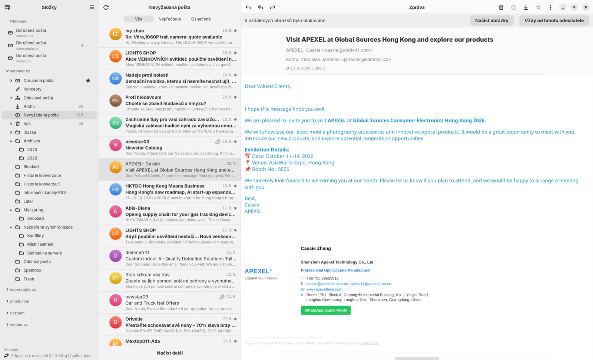
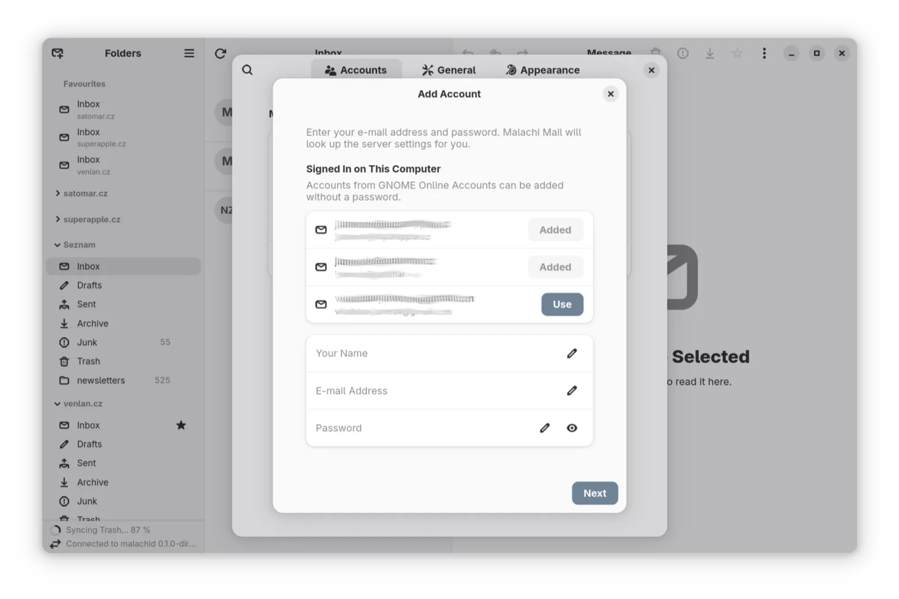
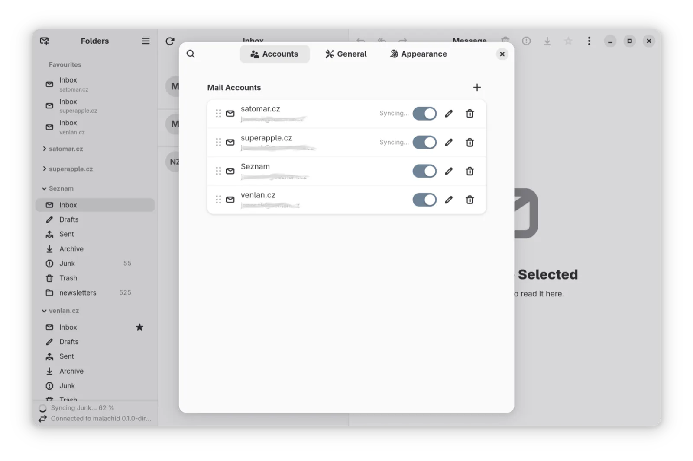
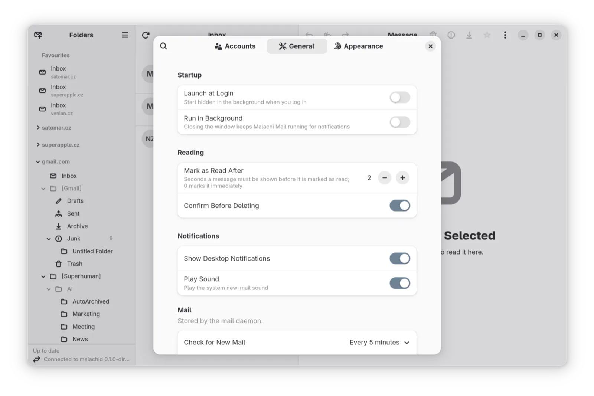
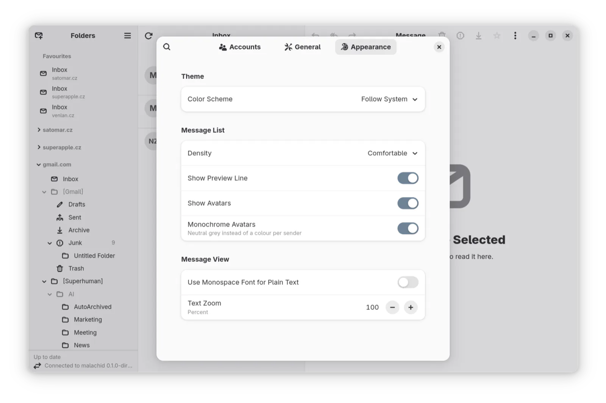

Your mail. Native on every desktop. Nobody in between.
One engine written in Go, three windows built with each platform's own toolkit, no cloud account and no servers of ours. Conversations, a calendar, Jira, a board of what waits for you, and an AI assistant that runs on your own account, only when you ask.
- GTK 4 on Linux
- AppKit on macOS
- WinUI 3 on Windows 11
- Open source, AGPL and GPL

Native on every desktop
Not a web page in a frame. Each client is written in its platform's own language and toolkit, with its keyring, notifications and conventions, and all three are driven by the same mail engine: the same behaviour, the same security decisions, one set of translations.
Yours
No account with us, no servers of ours between you and your mail server, no subscription, no telemetry. Mail is stored on your computer and searched there, offline. It leaves only for the server it came from, or for an AI model you chose and consented to.
Lean
No bundled browser. The engine is one Go process, the window is the platform's toolkit, and the system's web view draws only the message body, with JavaScript off and no network. Stored mail is compressed, and the attachments of older mail can stay on the server, or never be stored at all.
Built for hostile mail
Every message is sanitised in the engine before a window sees it. Remote images stay blocked until you say so, the renderer has no network, passwords never leave the system keyring, and every parser is tested against deliberately broken mail.
Everyday mail, done properly
The things you do a hundred times a day, the way a mail client should do them in 2026.
Conversations as a chat
Cards on a timeline or bubbles in a chat, with your own replies from Sent and your unsent drafts in place and the quoted history folded away. A quick-reply bar answers a short mail without opening a window.
The Board
A view beside Mail that sorts your conversations into Hot, Waiting for You, Waiting for Them and For Your Information from the headers alone. Remind me, Done, Archive. It never reads the words of a message.
Search that works offline
While you type, in the folder, the account or all accounts; case and diacritics ignored.
Newsletters under control
Mailing lists and newsletters are recognised and labelled. One click unsubscribes, and only when the sender's DKIM signature proves who they are.
Every account you have
A setup assistant finds the server; Microsoft 365 signs in in your browser; on GNOME, Online Accounts just work.
An assistant on your own account
Claude or ChatGPT, signed in as you, billed as your plan. It summarises, finds tasks and deadlines, rewrites a reply more politely or shorter, turns your words into a search and suggests replies. Nothing goes to the model before you ask.
Small pleasures
Plain text that looks like Markdown is pasted as formatted text. Recipients become badges. Drafts rest in the account's Drafts folder, so your phone sees them. Light and dark styles, favourite folders, a foldable sidebar. Czech from the first version.
Built for the working day
The parts other clients leave to add-ins, browser tabs and sticky notes.
Microsoft 365 through Microsoft Graph
Not IMAP, not EWS: the API Microsoft keeps. It works where basic authentication is off, signs in in your browser with the client the app ships, and the calendar comes with the same sign-in.
Microsoft is retiring Exchange Web Services for Exchange Online from October 2026; clients built on it are still catching up.
Jira in your mail client
A Jira Cloud or Data Center site is an account. Issues are read as conversations: the description, every comment, every status change. Comment in place of a reply, change the status from the issue card, hide the site's notification mail.
eWay-CRM
Save a message to eWay-CRM with links to contacts, companies, deals and projects, and the rest of its conversation follows it. Built in, on Linux and macOS as well as Windows.
A board that remembers follow-ups
Waiting for Them is your follow-up list. The assistant can note a title, a summary, tasks, a deadline with its exact quote and a promise you made, by hand or on a schedule, and draft a reply that you edit right on the board.
Calendar
Microsoft 365 and CalDAV calendars (Nextcloud, iCloud, Fastmail, Radicale and others), by day, week, month or as an agenda, with reminders. Invitations are answered from the message; a free slot is found across your calendars.
Security your IT will read
Passwords only in the system keyring. A server's certificate can be pinned by its fingerprint; there is no ignore certificate. The window and the engine authenticate each other. The core is AGPL, also available under a commercial licence.
Writes as you, per account
A profile tells the assistant who you are and how you write, with a note per account: a different signature and tone for the company address than for the private one.
An MCP bridge for your agents
Claude Code, Claude Desktop, Cursor, Zed or any MCP client gets a gated view of the mail, the calendar and the board. Mail content is fenced as data, never as instructions, and attachments arrive as text.
A mail client should not cost more than the mail
The window is GTK, AppKit or WinUI. The system's own web view draws the message body, and only while a message is open.
The whole mail engine, from IMAP to the search index, is a single native program with no runtime to carry.
Stored mail is compressed transparently. Preferences show the space used.
Keep attachments offline for 30 days, for ever, or never: older ones stay on the server until you open them.
A look around
The GTK client on Linux, from before conversations, the calendar and the board arrived. The macOS and Windows apps show the same panes with their platform's widgets.




Scroll sideways for more
Useful, optional, and never in charge
Your account, your consent
The assistant runs your own Claude Code or ChatGPT (through Codex), signed in as you. The first question asks whether mail may be sent to the model; the Board's triage has a consent of its own. Nothing is sent by mail before you send the draft yourself.
Tools decided at start, not by the model
What an agent may do is fixed when the MCP bridge starts. A tool outside the granted tier is not registered at all, so it does not even appear in the agent's list. Reading and drafts are always allowed; modifying, sending and triage are separate flags.
Mail is data, not instructions
Everything that comes from a message, a calendar or an issue is fenced with a one-time marker before the model sees it, and the bridge tells the model so. The assistant can annotate the board, but cannot set a state, a reminder or Done, archive, or delete a draft.
Next to the clients you may be using today
| Malachi Mail | Thunderbird | Outlook (new) | Apple Mail | Spark, Superhuman | |
|---|---|---|---|---|---|
| Native window | Linux, macOS, Windows | Its own toolkit, the same everywhere | A web app on every platform; no Linux | macOS only | Web or Electron; no Linux |
| Microsoft 365 | Microsoft Graph | EWS, added recently | Graph | EWS | Through the vendor's cloud |
| AI | Your own Claude or ChatGPT account, with consent | None built in | Copilot, paid separately | Apple Intelligence | The vendor's AI, in the subscription |
| Jira, CRM, a board | Built in | Add-ons | Add-ins | No | Split inbox at most |
| Mail passes through the vendor's servers | Never | No | Microsoft's | No | Yes |
| Subscription | None | None | Microsoft 365 | None | Yes |
| Source | Open, AGPL and GPL | Open, MPL | Closed | Closed | Closed |
Based on the products' public documentation in October 2026; details change with every release.
Said plainly
Version 0.1.2 is an early version: keep a second mail program for anything that matters. Some things are not there yet:
- No PGP or S/MIME. Signed and encrypted messages are left as they are.
- No message filters or rules, and no unified inbox (search across all accounts is there).
- No Google Calendar. Gmail outside GNOME signs in with an app password or an OAuth client of your own.
- Binaries for Linux only so far; the macOS and Windows apps are built from source until they are signed. See Download.
On your own mail, on your own computer
Flatpak, .deb and .rpm for Linux; macOS and Windows from source.